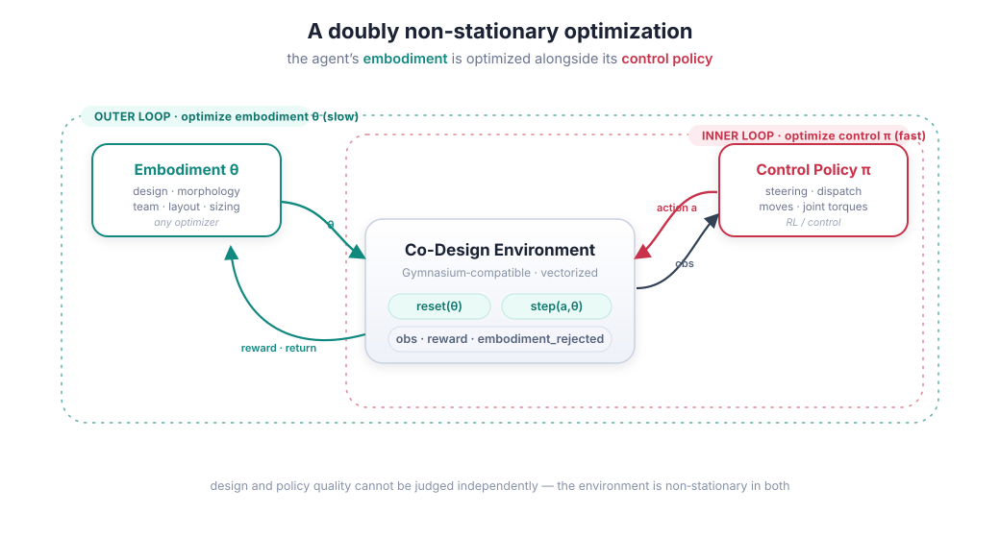
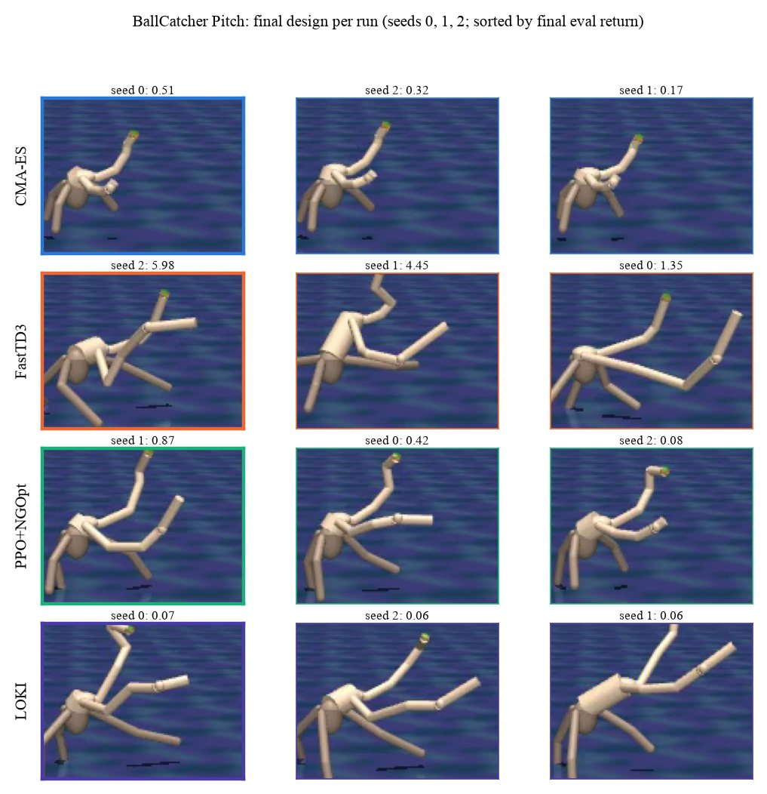
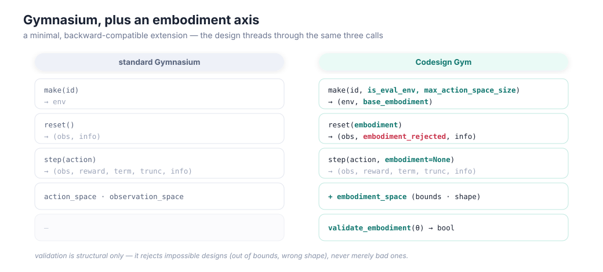
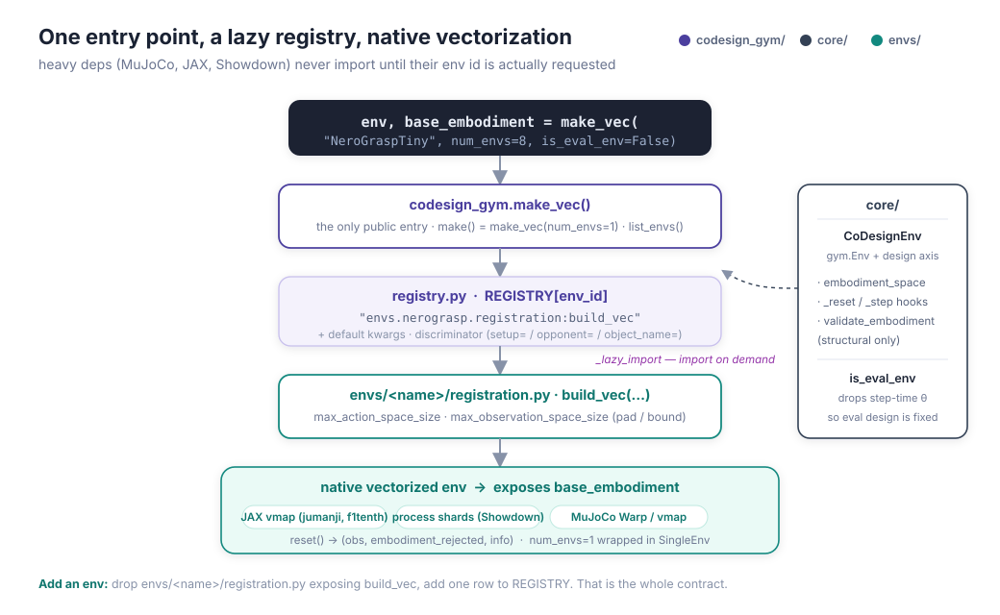

Codesign
Gym
Most RL benchmarks hand you a body and ask for a brain. Here you get to pick both: a Gymnasium-style suite where an agent’s embodiment is optimized alongside its control policy, from dexterous hands and soft walkers to microgrids and Pokémon teams.
University of Cambridge · CAMRAL
every clip is a final-evaluation rollout from our baseline runs
make_vecOptimize the body and the brain, together
Co-design is a doubly non-stationary problem: the best design depends on the policy that will run it, and the best policy depends on the design.
In robotics, energy systems and network planning, the shape of the agent is a decision too: how long the arm is, how big the battery is, where the base stations go. Choose it first and a controller inherits whatever that choice got wrong. Choose the controller first and the body never gets a chance to help.
Codesign Gym treats the design as a first-class object. Every environment exposes an embodiment_space with declared bounds, and reset takes the design you want to try. Control stays plain Gymnasium, so existing RL and control stacks plug in unchanged. Design search is left to whatever optimizer you like: CMA-ES, Bayesian optimization, an RL outer loop, gradient descent through a simulator.
The environments reject only impossible designs (out of bounds, wrong shape, overlapping cells), never merely bad ones. An unnavigable warehouse is a valid layout that simply earns little reward. Telling good designs from bad is the optimizer’s job.
→ the playground below lets you feel this in two dimensions

Playground: why you can’t tune them one at a time
A one-degree-of-freedom body. You choose its mass (the design) and a feedback gain (the policy). Every pixel is the exact cost of that pair, computed live in your browser.
Toy model: mẍ = −cẋ + u, u = −g x − h ẋ, cost = ∫(x² + 0.05 ẋ² + r u²) dt + λ/m (light bodies cost more to build). Solved exactly from the closed-loop Lyapunov equation. The LQ Structure environments scale this idea up to chains with sensor and actuator placement; the real environments add contact, noise and hundreds of design dimensions.
Thirteen ways to be embodied
Each family has several presets and a documented per-episode return window. Hover a card to play it (on a phone they play as you scroll); tap for the details.
How do today’s methods fare?
Four baselines under the same 4-hour wall-clock budget, five seeds per preset: CMA-ES searches design and policy parameters jointly; FastTD3 is off-policy RL whose actor also picks the design in a zero-time step before each episode; PPO+NGOpt optimizes the policy and the design independently; LOKI clusters a learned latent design space and trains a controller per cluster (its online clock starts after one hour of data generation and pre-training, and it ran on 18 of the 30 presets).
–
Lines: seed-mean eval return, step-held between evaluations; bands: ±1 std over seeds. An evaluation where every design was rejected is a gap.
No single method dominates: which one leads depends on the environment, which is the point of a suite. Counts are per preset (methods compared within an environment); no score is normalized across environments.

same task, very different bodies
The designs are where the methods diverge most. FastTD3’s best catcher (5.98) has long, stretched limbs; CMA-ES lands on nearly the same body on all three seeds; LOKI’s bodies are long-limbed too but score lowest here. A longer limb only helps if the policy learns to use it, and that coupling is exactly what these baselines have to handle.
Each run logs its designs, rejection rate, and a final-evaluation video. The numbers behind this section come straight from those logs (and match the paper tables).
Gymnasium, plus a design axis
The embodiment threads through the same calls you already know. Everything else is unchanged.
import codesign_gym as cg # one entry point; returns the env and its base design env, theta0 = cg.make_vec("BallCatcher-Pitch", num_envs=8) # your outer loop proposes a design ... theta = optimizer.ask(env.embodiment_space, theta0) obs, rejected, info = env.reset(embodiment=theta) # ... and your inner loop acts in it for t in range(horizon): obs, reward, term, trunc, info = env.step(policy(obs))
# reset returns a per-env rejection flag instead of raising obs, rejected, info = env.reset(embodiment=thetas) if rejected.any(): # structurally impossible designs: out of bounds, # wrong shape, overlapping cells. Score them and re-propose; # stepping a rejected env is an error. optimizer.tell(thetas[rejected], penalty) # check a design without touching the simulator state ok = env.validate_embodiment(theta)
# Racing and the Shape-shifting Hand accept a design at every step env, theta = cg.make_vec("RotateInHand", num_envs=64) obs, _, _ = env.reset(embodiment=theta) for t in range(horizon): theta = theta + 0.01 * design_policy(obs) # reshape the pads obs, r, term, trunc, info = env.step(action, embodiment=theta) # an eval env ignores step-time designs (with a warning), # so a fixed design cannot be reshaped mid-episode eval_env, _ = cg.make_vec("RotateInHand", 8, is_eval_env=True)
# envs/my_env/registration.py def build_vec(num_envs, *, is_eval_env, max_action_space_size, max_observation_space_size, **cfg): env = MyNativeVectorEnv(num_envs, **cfg) # vmap, shards, warp... env.base_embodiment = default_design() return env # codesign_gym/registry.py: one row, imported only when used REGISTRY["MyEnv-v0"] = ("envs.my_env.registration:build_vec", {})
- One entry point.
make_vecandmakereturn(env, base_embodiment);list_envs()lists all 86 ids. - Native vectorization. No Gymnasium vector wrappers. JAX envs
vmap, Showdown runs process shards, MuJoCo envs run batched on Warp. Batches can hold different designs. - Lazy heavy deps. MuJoCo, JAX and Showdown load only when you ask for an env that needs them.
- Padded spaces. When a design changes the observation or action size (say, more base stations),
max_*_space_sizepads to a fixed shape and an action mask comes back ininfo. - Designs are not observed in the geometric envs: the policy has to infer its body from how it moves.


Who built what
This suite pulls together environments from several projects and people. Commit history doesn’t tell the whole story, so here it is.
| Environment | Origin | Contributors |
|---|---|---|
| NeroGrasp | From scratch | Aviraj Newatia, Rika Antonova (earlier contributions from Austin Yang) |
| Pokémon Showdown | Built on Pokémon Showdown and poke-env | Aviraj Newatia |
| Solar Panel Cleaner | From scratch | Built by Yordan Tsvetkov, Rika Antonova; integrated by Aviraj Newatia |
| Ball Catcher | From scratch | Built by Yordan Tsvetkov, Rika Antonova, Leonard Pleiss; integrated by Leonard Pleiss, Aviraj Newatia |
| Shape-shifting Hand | From scratch | Yordan Tsvetkov |
| Truck Unloading | From scratch | Yordan Tsvetkov |
| Soft Walker | Differentiable JAX soft-body engine with a native Warp backend | Built by Andrew Spielberg; integrated by Aviraj Newatia |
| Classic MuJoCo (7) | Ported into MuJoCo Warp and co-design | Aviraj Newatia |
| Microgrid | Built on python-microgrid | Aviraj Newatia |
| Wireless Networks | Built on mobile-env | Aviraj Newatia |
| Robotic Warehouse | Built on Jumanji | Aviraj Newatia |
| Racing | Built on f1tenth_gym_jax | Aviraj Newatia |
| LQ Structure | From scratch | Aviraj Newatia |
Cite
If Codesign Gym is useful in your work, please cite it.
@software{newatia2026codesigngym,
title = {Codesign Gym: A Gymnasium-like Benchmark for Co-Design},
author = {Newatia, Aviraj and Tsvetkov, Yordan and Pleiss, Leonard and Antonova, Rika},
year = {2026},
url = {https://github.com/camral/codesign-gym}
}